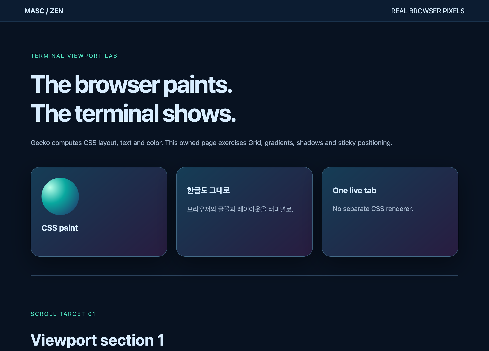

ACTUAL LIVE ZEN · 2026-09-08
브라우저가 그린 화면을 터미널로.
아래 이미지는 연결된 Zen에서 실제로 받은 PNG입니다. 첫 화면은 MASC TUI가 Kitty 프로토콜로 전송한 이미지와 바이트가 같습니다. 스크롤 실측은 MCP 조작이며, 새 TUI 스크롤 기능의 실행 증거는 아직 아닙니다.

캡처 응답 103–112ms · 로컬 페이지 5회 · 터미널 표시 FPS 미측정
검증 범위 · 측정값 · TUI 전송 기록 · CSS 원본